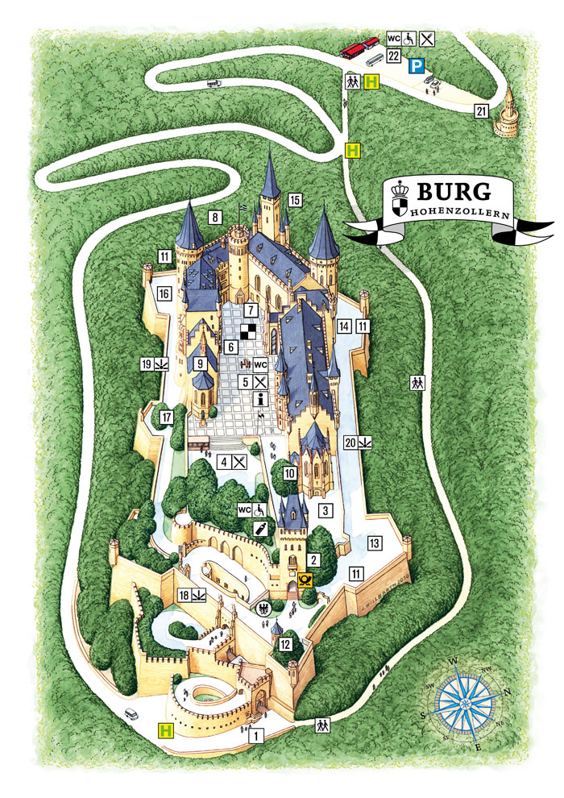

Hohenzollern Castle is a hilltop castle located on the Berg Hohenzollern, an isolated promontory of the Swabian Jura 855 meters (2,805 ft) (NHN) above sea level, 234 meters (768 ft) above and to the south of Hechingen, Germany, approximately 50 kilometers (31 mi) south of Stuttgart, capital of Baden-Württemberg. This mountain lends its name to the local geographic region, der Zollernalbkreis, and is known among locals as Zollerberg (Zoller Mountain), or simply Zoller.
